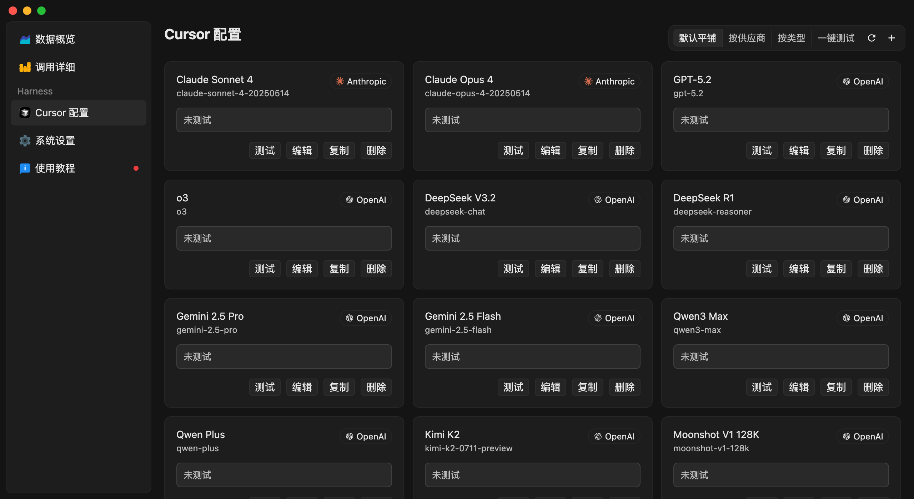

快速开始
安装青云currsor小助手，并让 Cursor 使用你自己的模型 API。本教程基于官方 Cursor Byok 文档改写，资源已全部托管在本仓库。
青云currsor小助手是独立项目，基于 CursorOK 助手二改，与 Cursor 及其开发者没有关联。软件本身免费，但模型服务商可能按用量收费。推荐使用 青云聚汇 中转站接入模型服务。
首次升级或配置后必须重启 Cursor，并新建对话。现有对话不会加载新的连接配置，继续使用可能提示“未登录”、无法看到模型，或出现
An unexpected error occurred。安装与配置
更新 Cursor
从 cursor.com 下载官方最新版 Cursor，直接覆盖安装，保持客户端为最新版本。
下载并启动青云currsor小助手
从 GitHub Releases 下载与你操作系统对应的最新版本，然后启动青云currsor小助手。
初始化并配置模型
打开 Cursor 配置，按界面提示初始化本地 CA，然后添加模型。可直接选择常用预设里的 青云聚汇，填写 https://api.qinggekeji.top、API Key 和模型名称，并运行连通性测试。

不同模型如何选择类型与协议，见 模型配置。
首次升级或配置后重启 Cursor
首次升级 Cursor 或首次配置模型后，必须完全退出 Cursor 并重新启动一次。仅关闭窗口或继续使用当前对话，都不会加载新的连接配置。
新建对话并选择模型
Cursor 重启完成后，点击新建对话，再从模型列表中选择你刚配置的模型（不要选 Auto）。请勿继续使用配置前已经打开的对话。
与官方账号并存
- 直接在 Cursor 中登录你自己的账号。如果之前用过旧版生成的 fake 账户，先退出它，再登录自己的账号。
- 账号有官方额度时，官方模型和本地模型可以随时切换混用。
- Auto 走的是官方模型：账号没有额度时选 Auto 会报错，请手动选择你配置的模型。
- 插件、代码库索引等 Cursor 功能都可以正常使用。
接下来
数据如何流转
Cursor 客户端
│ Agent 请求与工具结果
▼
青云currsor小助手本地服务
│ OpenAI / Anthropic 兼容请求
▼
青云聚汇或其他模型 API
API Key、模型配置和应用设置保存在本机。模型请求仍会发送到你选择的上游服务商。